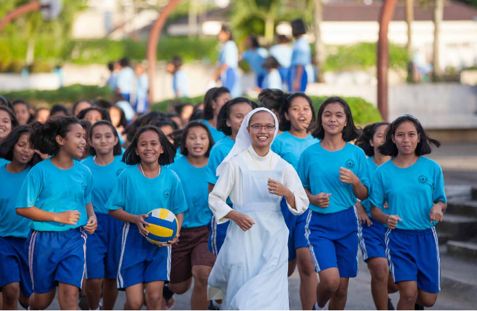
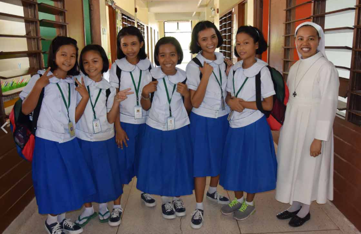

Philosophy
The Sisters of Mary Schools-Philippines believes that the Almighty God is
the very reason of its existence and is therefore the core of its curriculum.
Hence, it is firm in its mission of alleviating the suffering of the poor by
providing them with high quality education intensive on vocational-technical
training molding them into individuals imbued with moral virtues.
It adheres to its commitment of providing the learners with varied learning
opportunities to strengthen their potential that will prepare them for real-life
challenges and for a better tomorrow.
It remains steadfast to its advocacy of fostering brotherly love among its learners
while developing physically, mentally, emotionally, socially, and spiritually
into new disciples of God.

Mission
Inspired by her patroness, the Virgin of the Poor, the Sisters of Mary Technical Eduacatin Institute Cavite/Cebu, Inc.,shall direct its energy and resources to the poorest of the poor youth of the country by way of providing them with high quality secondary eduatio intensive on voacational technical curriculum molding them into citizen committed to serve the nation, to love their fellow being, and spread moral and spiritual values based on the Gospels.

Vision
The Sisters of Mary Schools-Philippines envisions that the graduates, in their everyday life and in the pursuit of their calling, will become the new disciples in spreading the work of redemption, and at the same time teach and lead by example the Marian virtues of simplicity, charity, gratitude and joy.